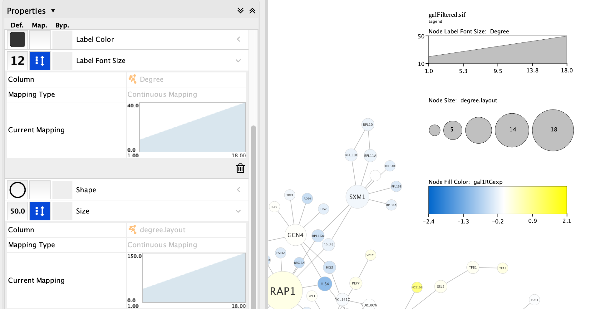

Legend Creator
This tutorial describes how to use the Cytoscape Legend Creator to generate a legend illustrating the visual mapping used in your networks.
If you haven't already, install the Legend Creator app.

Background

The Legend Creator includes a variety of features, for example describing a color gradient used for node fill color. This is a commonly used style mapping, and one that is difficult to recreate accurately in downstream tools.
First, let's review how
- In addition to setting Default style options, one can also set Mappings to define style options based on data in the node or edge table.
- Legend Creator can work with continuous and discrete mappings. Continuous mappings are created based on numerical values, where the range is determined by looking at the node table, such as expression level.
- Passthrough mappings will not create a legend entry, and are not discussed in this tutorial.
Getting started
We need a network with some style mappings to demonstrate the features of the Legend Creator. Let's load the Yeast Perturbation network, provided by Cytoscape as a sample session file.
- Open the Yeast Perturbation sample session from the Sample Sessions sessions in the
Starter Panel when you first launch Cytoscape. - You can also access the
Starter Panel viaView → Show Starter Panel .
Legend Panel
Next, we will take a look at the Legend Creator interface.
- Select the
Legend Panel tab of theControl Panel . - The app will automatically scan the network to review the style mappings and nodes in the network to determine how to build each legend entry.
- This scan can also be started manually using the
Scan network button.

Note: Legends are generated as annotations, and as such, are not updated dynamically. You must manually remove and recreate the legend if you change your styles.
Legend Panel
- The
Title andSubtitle can be updated from the default values. It's not possible to control the font, size or alignment in the Legend Creator interface, but we will see how to edit those later. - Check the
Lay out vertically option to position the legend along the right margin of the network. - Check the box
Draw bounding box if you want to include a rectangle surrounding all the legend entries. - The Legend Panel shows the style mappings identified by the scan and these are checked by default. The name of the relevant node table column and the name of the mapped attribute are displayed. Uncheck any mappings you want to exclude from the legend.
- Click
Add Legend button on the bottom of the panel to add the selected mappings.
In this example, the Node Label Font Size and Node Size are both mapped to the node degree, or the number of neighbors a node has (Degree and degree.layout respectively) and the Node Fill Color is mapped to gal1Rexp.
First Draft
The network now includes the legend to the right of the network. The legend includes three components, one for each of the mappings we selected. The first two show both font label size and node size increasing with node degree, i.e., those with more neighbors. Third, a color gradient entry shows expression level of our protein of interest.

Depending on the purpose of the visualization you are creating, some mappings may not add much information to the legend and sometimes mappings are redundant. The easiest way to decide which entries are useful is to generate the full legend, look at the result and then make updates and recreate the legend.
First Draft
The first two mappings are similar in that they both map measures of the nodes’ degree to the size of both the nodes and its label, via a continuous mapping.
Note: Although size is a useful attribute to map, showing it in a legend is not always useful. Our perception of size is qualitative; we can tell big from small, but we can’t tell a 50 pixel diameter from 63 pixel diameter if they are not right next to each other and the same shape. Adding a legend to show the quantitative measure of size is not always necessary.
First Draft
The other mapping is a color gradient. It should match our continuous mapping for the variable gal1RGexp in the
Note: Because color is such an important attribute perceptually, it is important to use color with care. Rather than defining arbitrary colors for minimum and maximum values, we recommended using pre-defined color palettes that have been designed to make sure they have consistent color saturation across the range. If you double-click on a gradient in the
Layout and Placement
- The Legend can be layed out vertically or horizontally, and will always be placed outside the bounds of the network.
- To move the legend, first click the
Toggle Annotation Selection option in theNetwork View Tools under the network (red arrow). UnselectToggle Edge Selection andToggle Node Selection . You can then select the legend by shift-and-drag. Once selected, you can reposition the legend.

Annotation Panel

To edit more specific aspects of the legend, such as the fonts or sizes, or the color of the background, you will need to use the
- Add or remove items from the foreground or background layers.
- Move items up or down, or move them between the layers.
- Right-click and select
Modify Annotation... to edit the item.
Summary
The Legend Creator creates legends for the most common attributes applied to nodes in your graph. Adding legends for edge attributes, such as line style, color and thickness, is not supported in the current version, but is a planned feature.